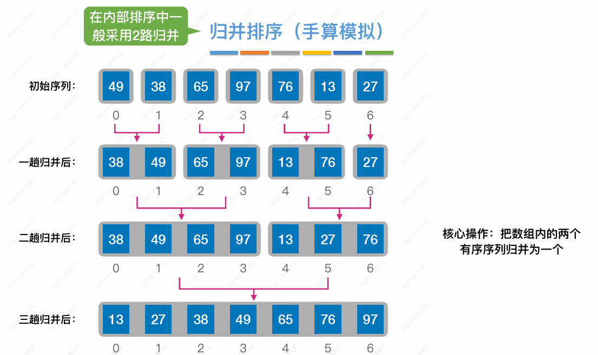

排序
排序
概念

区分比较次数和移动次数
插入排序
插入排序每趟排序都未必把某个元素放入最终位置
直接与折半插入
算法
稳定性: 稳定
空间复杂度:
时间复杂度:
- 最好复杂度:
- 最坏复杂度:
- 折半插入排序移动元素次数不变，复杂度仍为
- 链表插入排序比较元素次数不变，复杂度仍为
希尔排序
算法
稳定性
- 不稳定: 相同关键字划分至不同子表可能改变相对次序
空间复杂度:
时间复杂度
- 最坏复杂度:
适用性
- 随机访问仅限顺序表，同理折半插入排序也仅限顺序表
交换排序
冒泡排序
概念
移动次数 = 比较次数 * 3
快速排序
算法

1 | |
缺陷与优化
概念


选择排序
选择排序 比较次数 固定 → 复杂度固定
简单选择排序

堆排序
概念
子结点取最值也要计算比较次数

算法
1 | |
归并排序
归并
性质
- 两个长度为 N 有序表合并，最少比较次数 N，最多比较次数 2 N - 1
排序

复杂度
稳定性: 稳定
归并排序 比较次数 固定 → 复杂度固定
基数排序
概念
算法
桶
1 | |
排序
1 | |